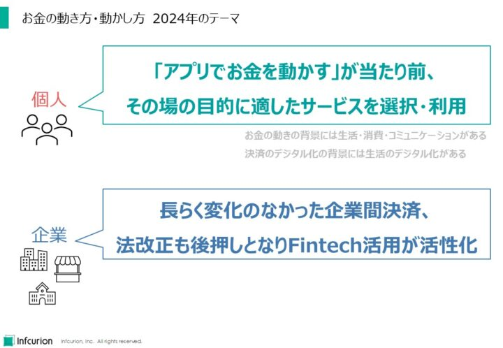
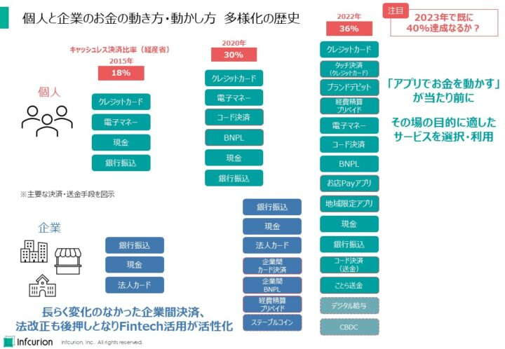
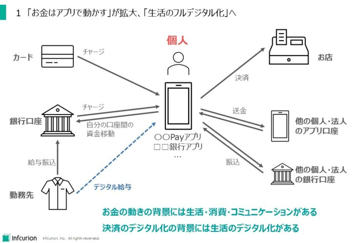
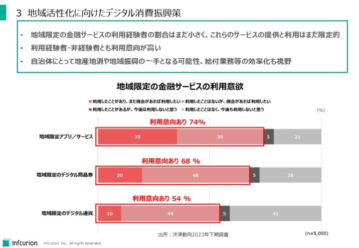

日本が現金社会だったのはもう昔のことで、いまは消費者の61%が「自分はキャッシュレス派」と自認する時代です。広く利用が定着した今、キャッシュレス決済は単なる「便利な支払手段」という枠組みを超えて、新たなデジタル社会の実現の土台と位置付けられるようになっています。
社会のデジタル化が進む中、キャッシュレス決済とFintech（フィンテック）の果たす役割は拡大しています。2024年を、10の注目トレンドで展望します。
目次
総論 お金の動き方・動かし方の多様化
2024年展望を語るうえでの大前提に、キャッシュレス決済の継続的な拡大があります。キャッシュレス化は日本の経済戦略のひとつにも位置付けられており、経済産業省はKPIとして「キャッシュレス決済比率」を継続的に算出し公表しています。政府目標は「2025年までに4割程度」ですが、2022年時点の実績値は36.0%。前倒しの目標達成も視野に入ってきています。

個人は「アプリでお金を動かす」が当たり前に、企業はFintech活用が活性化
キャッシュレス決済利用の拡大は、お金に関する個人の行動を大きく変容させています。「アプリでお金を動かす」のが当たり前になっていっているのです。そうした行動を示す個人は2024年も増え続けるでしょう。人は理由もなくお金を動かしたりしません。お金の動きの背景には必ず、生活・消費・コミュニケーションがあります。決済のデジタル化が進んでいる背景には、生活のデジタル化があるのです。
企業については個人とは事情が異なります。従来から、企業間決済は銀行振込が主流で、そういう意味ではキャッシュレスでした。長らく変化のなかった企業間決済ですが、最近の一連の法改正も後押しとなってFintech活用が活性化しています。2024年は企業向けFintechが飛躍を始める年となりそうです。

個人と企業のお金の動き方・動かし方 多様化の歴史
歴史を振り返ると、2015年のキャッシュレス決済比率は18%、個人に普及している主要な決済・送金手段はクレジットカード、電子マネー、現金、そして銀行振込でした。企業のほうは銀行振込、現金、そして法人カードです。
2020年にはキャッシュレス決済比率は30%と大きく向上し、コード決済やBNPLが幅広い個人に利用されるようになりました。そして2022年にはキャッシュレス決済比率は36%に達し、多様な決済・送金手段がさまざまなシーンでの利便性を提供しています。企業にも企業間カード決済、企業BNPL、経費精算プリペイドといったFintechサービスが広まり始めています。
2024年には、2023年のキャッシュレス決済比率が公表されます。既に40%を達成している可能性もあり、ここは要注目です。
生活の観点からの４つの注目トレンド
「お金はアプリで動かす」が拡大、「生活のフルデジタル化」へ
2018年に登場したコード決済は爆発的に普及し、その利用率は68％に達しています。店頭の決済だけでなく、残高へのチャージやユーザー間送金など「アプリでお金を動かす」という行動を日本の消費者に浸透させた点も、日本社会のデジタル化に大きく貢献しました。コロナ禍における銀行アプリの普及もあって、お金はアプリで動かすのが普通、という層が拡大しています。現時点ではこうしたお金の動きの出発点は給与口座ですが、デジタル給与制度が本格始動する2024 年以降は、一部の資金は決済アプリ等に直接チャージされ利用されるようになっていきます。

「お金はアプリで動かす」が拡大、「生活のフルデジタル化」へ
様々な生活シーンでのアプリ利用でも、その場で決済まで完了してしまえることはプラスです。紙の書類や現金に触れることなく、日常生活の中でデジタルサービスを駆使する「デジタル消費者層」が出現・拡大しています。そのトレンドは2024年を超えて、不可逆に進行していきます。
物価高での家計防衛と資産形成
昨今の物価高で、家計防衛への関心が高まっています。「決済動向2023年下期調査」では、「物価上昇をきっかけとしてあなた自身が新しく利用を始めたものはありますか」という質問に対し、物価高対策にポイントアプリの利用を始めた人は約4人に1人（24％）、コード決済アプリの利用を始めた人は約6人に1人（17％）の結果が得られています。事業者にとってもポイントアプリは、クーポン配布等の来店促進策や、自社独自のコード決済による決済手数料の削減といった様々な施策の土台にもなり得ます。レジでアプリ画面を提示することに慣れた消費者層が拡大している中、新たな顧客接点として重要度を増していくと見られます。
また、各種Fintechサービスの中でも「ポイント投資」・「株・FX投資アプリ」・「貯金アプリ（銀行口座連動型）」といった資産形成系サービスは利用率の高い人気サービスです。2024年には新しい少額投資非課税制度（NISA）も始まり、証券業界では手数料ゼロ化の動きもあります。松井証券と住信SBIネット銀行、岡三証券とGMOあおぞらネット銀行など新しいパートナーシップも生まれています。資産形成分野でのFintechの動きには注目です。
地域活性化に向けたデジタル消費振興策
専修大学の研究によると、日本には2022年待つ時点で135件のデジタル方式の地域通貨／地域決済／地域ポイントが稼働しています。2023年にも新たなサービスの発表や稼働が相次ぎました。筆者の目についたものだけでも「かながわPay」、「トチツーカ」、「Tango Pay」、「レシ活ちよだ」、「めぶくPay」、「ふくいはぴコイン」など様々です。
「決済動向2023年下期調査」にて、ポイント還元やキャッシュバック特典がある地域限定アプリ／サービス、デジタル商品券、デジタル通貨に関する利用意向を調べたところ、それぞれ5割を超える利用意向が見られました。中でも地域限定アプリ／サービスでは「機会があれば利用したい」との回答が74％にも上りました。一方で、地域限定アプリ／サービス、デジタル商品券、デジタル通貨のいずれも「利用未経験であるが、機会があれば利用したい」とする回答者がもっとも多い結果になりました。
地域限定の金融サービスの利用経験者の割合はまだ小さく、これらのサービスの提供と利用はまだ限定的です。一方で、利用経験者・非経験者とも利用意向が高いことを鑑みると、これらのサービスは自治体にとって地産地消や地域振興の一手となる可能性があります。

地域活性化に向けたデジタル消費振興策
公共交通の決済多様化 タッチ決済とコード決済
鉄道やバスなど公共交通機関に乗る際に便利なのはSuica・PASMOなどの交通ICカード。しかしその利用は、鉄道網が整備された地域に偏りがちです。「決済動向2023年下期調査」によると、全国5000人のうち36%が交通ICカードを利用していますが、地域別でみると関東地方だけが利用率55%と突出しており、2位の近畿地方で34%、3位の北海道で26%。もっとも低い四国地方では12%という結果でした。
しかし交通ICカード非利用でも、クレジットカードやスマートフォンは利用しているという人は多数います。特にクレジットカード等の国際ブランドの「タッチ決済」は海外の交通機関では利用が拡大しています。日本国内でも、カードをかざす「タッチ決済」やスマートフォンのコード決済がチケットレス乗車の実現手段として有望視され、各地で導入や検討が進んでいます。2023年9月現在、全国の公共交通機関48社で同社の「タッチ決済」が利用可能となっています。コード決済関連では、JR西日本、広島電鉄、東急電鉄などがQRコードを使ったデジタル乗車券の導入や実証を進めています。
コロナ禍を経て最近では外国からの訪日客も増えていますが、訪日客にとっては日本独自の交通ICカードよりも、自国で普段から利用している国際ブランドカードのタッチ決済のほうが便利でしょう。また、国内他地域からの訪問者や高齢の利用者には、スマートフォンアプリのほうが便利ということもあるかもしれません。公共交通の決済多様化は、多様な利用者層によりよい乗車体験を提供していく流れに位置付けることができます。
ビジネスの観点からの４つの注目トピック
法改正が後押し、SMEを含む企業向けのFintechが活性化
企業向けFintech、特に中小事業者（SME）向けの領域でサービス創生とユーザー獲得が活発化しています。注目の領域は決済・経理・受発注です。どのような企業も必要とする業務であって、Fintechとの親和性の高い分野です。
決済・経理・受発注業務でのデジタル化の遅れは際立っています。全国中小企業振興機関協会の調査によると、中小企業82.9%は請求業務において紙の書類を郵送しています。経理業務では40%がExcel等のような表計算ソフトを利用しており、振込では54%が銀行まで赴いて窓口やATMを利用、61%は通帳記帳して入金確認しています。人手のかかる作業が温存されており、貴重な従業員の業務時間が費やされています。
従来はSMEが利用しやすいデジタルサービスがあまりなかったことも原因と思われます。IT人材確保や導入コストがハードルになっていました。最近は明確にSMEをターゲットとする、導入ハードルの低いSaaS型のサービスが数多く登場しています。BtoB取引プラットフォーム、業務SaaS（ホリゾンタルSaaS）、企業間カード決済、業種特化SaaS（バーティカルSaaS）などです。
法制度の動向もSMEへのFintech導入の追い風として作用しています。2023年10月からのインボイス（適格請求書）制度、2024年1月から本格運用される改正電子帳簿保存法は取引のデジタル化を促すものです。また、紙の約束手形と小切手も2026年度末までに全面電子化される予定です。
2024年はSMEを含む企業向けのFintechが活性化する年になると見ています。
API・クラウド・Embedded Financeの金融実装が進む
金融業界は常に情報技術（IT）利用の先駆者でしたが、APIやクラウドといった異業種では普通に利用される技術についてはあまり積極的ではありませんでした。そこを突いて大きく成長し、金融業界に変化を促してきたのがFintechだったといえます。
インフキュリオン・インサイトではそうしたFintechの潮流についてたびたび発信してきましたが、最近の金融業界ではAPIやクラウド活用も当たり前になってきています。API経由で金融機能を提供するBaaS（Banking-as-a-Service）や、BaaSを用いて金融機能を組み込むEmbedded Financeの事例が、Fintechスタートアップだけでなく、大手金融機関からも当たり前に出てくるようになってきています。ごく一部ですが事例を挙げてみます：
- みんなの銀行とのAPI連携による、三井住友海上プライマリー生命の『AHARA（アハラ）』
- マルチクラウドによる次世代コアバンキングシステム開発を開始した北國ファイナンシャルホールディングス
- 三井住友信託NEOBANK
- 楽天銀行のBaaSを活用したネットバンクサービスの開始
わたしたちは「新たな技術とユーザー体験で、金融サービス利用のすそ野を広げること」がFintechの存在意義と考えてきました。Fintechが金融のメインストリームに取り込まれ、実サービスとして多くのユーザーに提供されてゆくことは、Fintechがその当初のビジョンを実現しつつあることを意味します。2024年も、こうしたFintech型サービスが相次いで登場することは疑いありません。
大規模言語モデル（LLM）の事業活用と業務活用
ChatGPTが一般に公開されたのが2022年11月30日。今、テクノロジーとビジネスにおける注目トピックといえば、なんといっても生成AIでしょう。文章や画像の生成という、人間だけが持つと思われてきた知的で創造的な能力を示すものです。従来は人間にしかできないと考えられてきた様々な業務を肩代わりしたり、支援したりする可能性に注目が集まっています。
金融分野における生成AI活用の可能性に関しては、米国著名ベンチャーキャピタルであるアンドリーセン・ホロウィッツが興味深い論考を出しています。「Financial Services Will Embrace Generative AI Faster Than You Think（金融サービス事業者による生成AI活用はあなたが思うより早く進行する）」と題されているとおり、金融サービス領域での生成AI活用、特に自社独自データを反映させたLLMの実現に向けて迅速に動くよう促す内容です。「Every Company Will Be A Fintech Company（すべての企業はフィンテック企業になる）」という記事でEmbedded Financeの興隆を予見し、その発展をリードした存在であるだけに、生成AI活用に関しても同社の知見は重みをもっています。この論考では金融機関における生成AIの5つのユースケースを挙げています：
- 顧客体験のカスタム化（Personalized Consumer Experiences）
- 業務オペレーション効率化（Cost-Efficient Operations）
- コンプライアンス効率化（Better Compliance）
- リスク管理高度化（Improved Risk Management）
- タイムリーな予測とレポーティング（More Dynamic Forecasting and Reporting）
日本国内の金融業界についても、生成AIの業務活用に向けた取り組みが報道されることは珍しくありませんでしたが、今のところ目に見える新サービスは確認できていません。しかし2024年はそろそろ助走期間を経て、外向けのサービスにおける事業活用や、バックオフィスでの業務活用でインパクトが感じられる年になることを期待しつつ、注視しています。
新たな価値媒体としてのステーブルコインとデジタル証券の実現が進む
ブロックチェーン技術で実現されたデジタル通貨の最初の例はビットコイン。中央管理者がいなくとも運用できる通貨的なものとして衝撃を与えました。しかし今では、通貨というよりは投機対象として社会に位置付けられているといえます。
ステーブルコインは、価値の安定したデジタル通貨であり、ビットコインなどにつきものの価格変動の問題を克服することを目的として開発されています。これらは米ドルなどの法定通貨などの価値に連動させることで信頼性を高め、取引での利用を促進するものです。国内では2022年6月に成立した改正資金決済法においてステーブルコインに法的な位置づけが与えられました。MUFG、オリックス銀行、JPYC、YENなどが実証や発行に向けて動いています。SBIホールディングスはステーブルコインUSDCの国内流通に向け、発行会社である米Circle社との基本合意書を締結したとのことです。国産ステーブルコイン勢はまず企業間取引やBtoBtoCで利用を獲得しようとする模様です。
デジタル証券は、株式や債券などの金融資産をブロックチェーン技術を用いてデジタルトークン化したものです。証券の発行・取引・管理が効率化され透明性が高まると期待されています。トークン化された資産は分割可能で、幅広い投資家にとってアクセスしやすいものになります。資本市場の流動性が向上し、新たな資金調達機会をもたらすと期待できます。日本取引所グループ（JPX）は「中期経営計画2024」で「2024年度末までにデジタル証券市場創設」を表明しました。
2024年は金融におけるブロックチェーン活用が新たな段階に入る年になりそうです。
将来への議論に関する２つの注目トピック
緊急度を増すキャッシュレス決済の安心と安全
キャッシュレス化・デジタル化の進む日本社会ですが、だからこその懸念も強くなっています。増加する一方の不正利用被害、そして決済インフラの障害です。
金額ベースで圧倒的な存在感を持つクレジットカード。日本クレジット協会の公表データによると２０２２年の取扱高は93兆円を超えています。その一方で、2022年の不正利用被害額は437億円に達しています。問題は、経済産業省と業界が連携して不正の抑止に努めているにも関わらず、不正利用被害は増加の一方であること。2022年の被害額は対前年30%以上の増加でしたし、2023年は被害額が500億円を超えるのではないかとの有識者の声もあります。
そして2023年後半には決済インフラの障害が大きな注目を集めました。10月に発生した全銀システムの障害、そして11月のCARDNETセンターの障害です。銀行振込やカード決済の一部が利用できなくなってしまいました。影響範囲は限定的だったとはいえ、生活や業務がこうした決済インフラへの依存を強めているという事実を再認識させられました。
当局も業界も、キャッシュレス決済の安心と安全を守るための努力を続けてきました。そしてキャッシュレス化と社会のデジタル化が急速に進行している今、決済インフラの安心と安全の議論は緊急度をさらに増しています。2024年のキャッシュレス決済業界全体の重要アジェンダです。
民間業者も加わってCBDC（デジタル円）のイメージ具体化
最後の注目トピックは中央銀行デジタル通貨（CBDC）。日本銀行は数年来、そのような「デジタル円」に関する検討を続けています。当初から「検討はしているが現時点では発行の計画はない」というスタンスですが、実証実験を重ねて着々と知見の蓄積は進んでいる印象です。
2023年には民間からも多数が参画する「CBDCフォーラム」が組成され、活動を開始しています（われわれインフキュリオンも参加しています）。幾つかのワーキンググループが設置され、それらの議事概要や資料も順次公開されています。様々なキャッシュレス決済手段や送金サービスがある中で、法定通貨としての「デジタル円」の意義は何なのか、民間も巻き込んでどのようなエコシステムが構築されていくのか。2024年以降も議論は継続され、日本版CBDCのイメージの具体化が進められていくと見られます。


{kind=link}
{kind=link}
{kind=link}
{kind=link}
{kind=link}